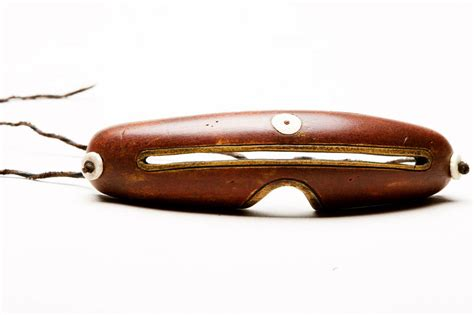
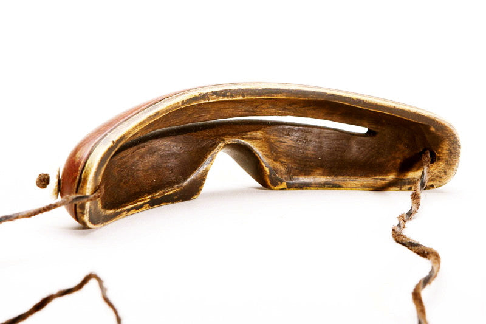
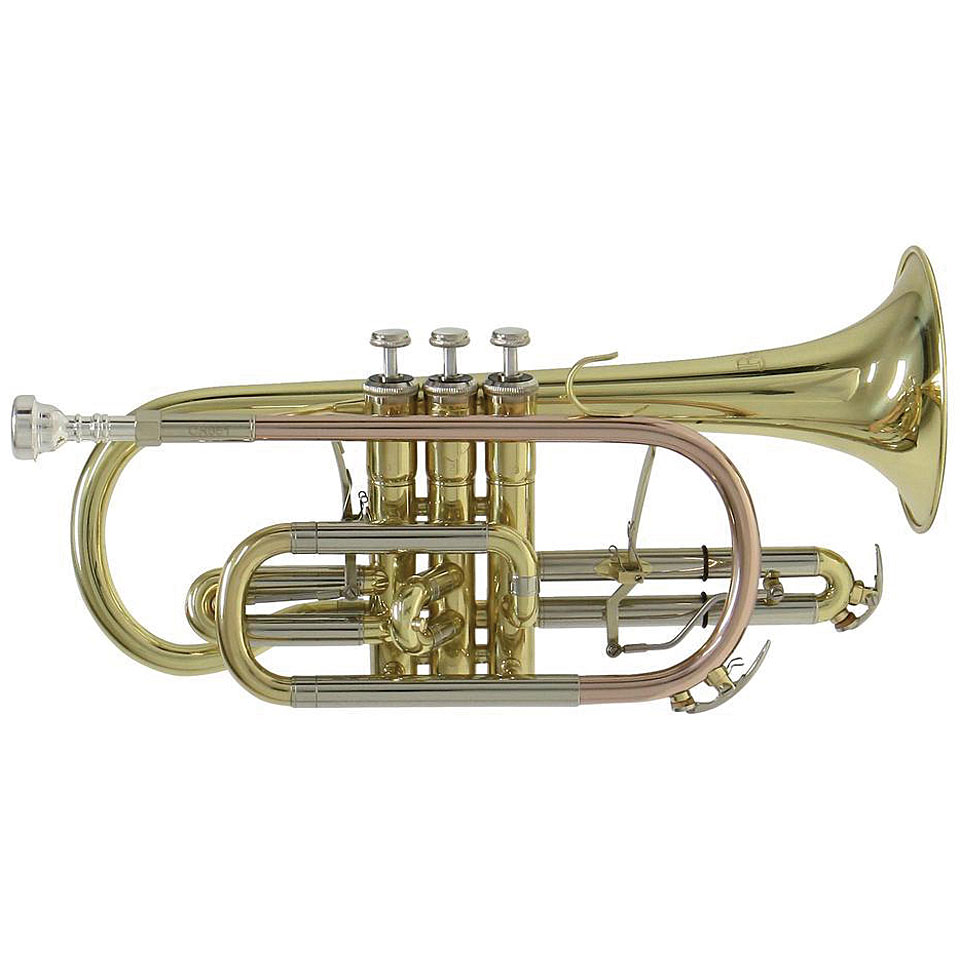
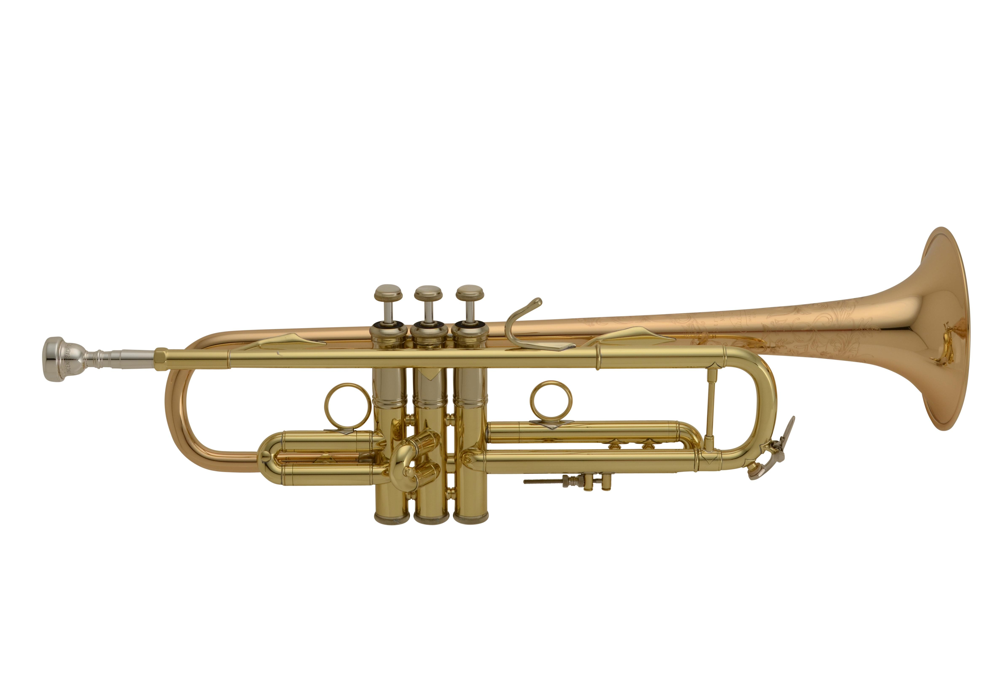

A little while back, my friend David showed me a modification he had made to a
pair of gardening sunglasses; the kind that shield the sides of the eyes as well
as the front. He had put black tape on the sides and front of the glasses, but
he left two slits untaped on the front near his eyes. This effectively made the
glasses into blinders that restricted his field of vision to only what was in
front of him. Apparently he wore them when he was in a distracting
environment and needed to focus on homework or other tasks.
I thought this was a great idea, and it reminded me of something I had seen
online a few years back. The Inuits in Scandinavia and in other arctic areas
make goggles to protect their eyes from the bright sunlight that reflects off
the snow. In fact, snow blindness is a real and serious condition caused by
overexposure to UV light, so these goggles are necessary to protects the eyes of
the Inuit peoples. The goggles they wear are generally made out of wood or bone.
They carve the goggles to fit their own face, and in some cases they carve or
paint patterns on the outer suface. The photos below show two examples of these
goggles; notice the decorative etchings on the first pair. The second pair of
goggles have three white circles on the front. The two circles on the sides
serve to hold the securing twine in place, but the one in the center is
decorative.



I thought it would be nice to have similar glasses as my friend David that would
help me tune out distractions and study, but I also wanted to have them custom
made so that they were comfortable and looked cool. Thus, I set out to design my
own "focus goggles".
I initially set out to measure my head and face using a picture of myself next to
a ruler, and define the geometry of the goggles using this information. Not only did
this solution make me look like a cave-man who just grasped the concept of distance and measurement,
it was really hard to do. How do I acually define the curves
of my face.. with a cartesian equation? My roommate was the source of the best and defninitive
and solution, a scanner app that exports whatever you scan as an 3D file (.stl). This was
perfect, since I could just pop a scan of my face directly into the software I would use
to design the goggles, SOLIDWORKS. So I scanned my face and got to work. This was the result of
the first design:


The goggles fit my face, and were not uncomfortable at all. Plus, they make the wearer look like a model
showcasing the newest designer eyewear at Paris Fasion Week. The main downside of this first design
is that the eye-holes are relatively far away from the wearer's pupils, and as a result, the eyes tend
to get strained relatively quickly. I'm not sure if it's because of the hole locations making focusing more difficult,
or due to the way light enters, or something else.
An evaporative cooler is a type of cooling system that uses water's high specific
heat capacity to remove heat from the air while adding humidity. Evaporative coolers
are also known as swamp coolers. An evaporative cooler is made of these compononents:
1 - Reservoir
2 - Cooler Pad
3 - Fan
4 - Pump
The cornet is a brass instrument that is nearly identical to the trumpet. The main
difference between cornets and trumpets is that the tubing of a cornet begins to expand
into the bell before that of a trumpet. Because of this, cornets have "conical", or
cone-like, tubing as opposed to the trumpet's "cylindrical" tubing. The overall length of a cornet is also generally
shorter than that of a trumpet. Otherwise, these two instruments are nearly identical. They both
have three valves, are made of similar materials, and have the same effective length of tubing. Cornets
and trumpets are most commonly tuned to Bb, meaning that the lowest note that can be played
without pressing down any valve buttons is Bb. For these instruments, Bb is written as C so
that it is easier to read and write sheet music for them.
See this picture of a cornet followed by a picture of a trumpet:

